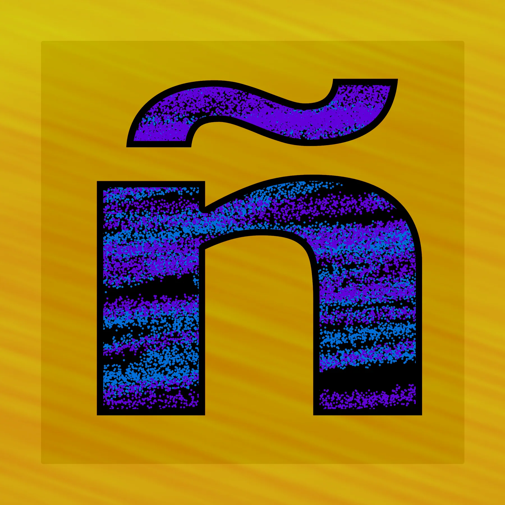

Chapter VI · Tools / Automation
Accent Picker
My office-mate Jasper felt bad about misspelling a client’s name — there was no easy way to type the accents. That one small problem turned into two pieces of software.
- Clear writing
- Technical curiosity
- Tools for the team


How it works
I like a challenge, and I think in automation, so I wrote an AutoHotkey tool: type a caret before a letter — ^e — and a small menu opens with every accented version of it. Pick one with the keyboard and keep typing. Your hands never leave the keys.
The second program
An installer creator
It worked — but installing it was the hard part for Jasper. Homebrew software only helps if the person who needs it can get it running. So I built a second program that packages a project, adds it to start-up, and gives it a clean uninstall. Now anything I make can be handed to a coworker in one step.
The accent picker fixed one person’s problem. The installer made every tool after it shareable.